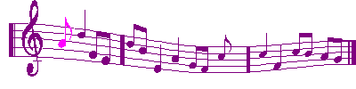

Favorite Songs
Because - The Beatles
Nowhere Man - The Beatles
Breakfast In America - Supertramp
Space Oddity - David Bowie
The Adventures of Rain Dance Maggie - Red Hot Chili Peppers
Poster Child - Red Hot Chili Peppers
Favorite Artists
The Beatles
The Racontuers
Collective Soul
Queen
David Bowie
Red Hot Chili Peppers
Supertramp
Billy Joel
The Offspring
Chumbawamba
Weezer
Green Day
Guns N' Roses
George Harrison
Elton John
Talking Heads
Traveling Wilburys
Smash Mouth
The B52's
The Coasters
Sublime
Paul Simon
The Lost Fingers
"Weird Al" Yankovic
They Might Be Giants
R.E.M.
Fastball
ABBA
Ren
Citizen Fish
Subhumans
Recent songs